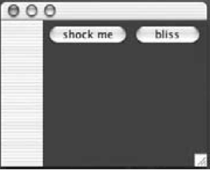
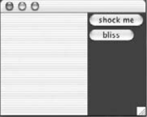
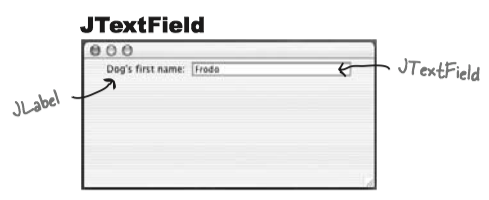
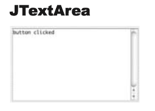

Chapter 13 Using Swing¶
1 Swing components¶
Component is the more correct term for what we've been calling a widiget. Text fields, buttons, scrollable lists, etc. are all components. They all extend
2 Layout Managers¶
A layout manager is a Java object associated with a particular component, almost always a background component. Different layout managers have different policies for arranging components.
The Big Three layout managers: border, flow, and box.
Border layout¶
A BorderLayout manager divides a background component into five regions. You can add only one component per region to a background controlled by a BorderLayout manager. Components laid out by this manager usually don’t get to have their preferred size. BorderLayout is the default layout manager for a frame!
BorderLayout cares about five regions: east, west, north, south, and center
frame.getContentPane().add(BorderLayout.EAST, button);
Flow layout¶
A FlowLayout manager acts kind of like a word processor, except with components instead of words. Each component is the size it wants to be, and they’re laid out left to right in the order that they’re added, with “word-wrap” turned on. So when a component won’t fit horizontally, it drops to the next “line” in the layout. FlowLayout is the default layout manager for a panel!
FlowLayout cares about the flow of the components: left to right, top to bottom, in the order they were added.
A
public void go() { JFrame frame = new JFrame(); JPanel panel = new JPanel(); panel.setBackground(Color.darkGray); JButton button = new JButton(“shock me”); JButton buttonTwo = new JButton(“bliss”); panel.add(button); panel.add(buttonTwo); frame.getContentPane().add(BorderLayout.EAST, panel); frame.setSize(250,200); frame.setVisible(true); }

Box layout¶
Unlike FlowLayout, BoxLayout can force a ‘new line’ to make the components wrap to the next line, even if there’s room for them to fit horizontally.
public void go() { JFrame frame = new JFrame(); JPanel panel = new JPanel(); panel.setBackground(Color.darkGray); //Change the layout manager to be a new instance of BoxLayout panel.setLayout(new BoxLayout(panel, BoxLayout.Y_AXIS)); JButton button = new JButton(“shock me”); JButton buttonTwo = new JButton(“bliss”); panel.add(button); panel.add(buttonTwo); frame.getContentPane().add(BorderLayout.EAST, panel); frame.setSize(250,200); frame.setVisible(true); }

3 Playing with Swing Components¶
The Java Tutorials by Oracle, describes every Swing component with excellent demos, see here.
JTextField¶

Constructors
JTextField field = new JTextField(20);JTextField field = new JTextField(“Your name”);
How to use it?
- Get text out of it
System.out.println(field.getText());
- Put text in it
field.setText("whatever");:::Java field.setText("");
- Get an ActionEvent when the user presses return or enter
field.addActionListener(myActionListener);
- Select/Highlight the text in the field
field.selectAll();
- Put the cursor back in the field (so the user can just start typing)
field.requestFocus();
JTextArea¶

Unlike
- Constructor
JTextArea textArea = new JTextArea(10,20);
- Make it have a vertical scrollbar only
JScrollPane scroller = new JScrollPane(); scroll.add(text) textArea.setColumns(20); textArea.setLineWrap(true); textArea.setRows(5); textArea.setWrapStyleWord(true); textArea.setEditable(false);panel.add(scroller);
- Replace the text that’s in it
text.setText(“Not all who are lost are wandering”);
- Append to the text that’s in it
text.append(“button clicked”);
- Select/Highlight the text in the field
text.selectAll();
- Put the cursor back in the field (so the user can just start typing)
text.requestFocus();